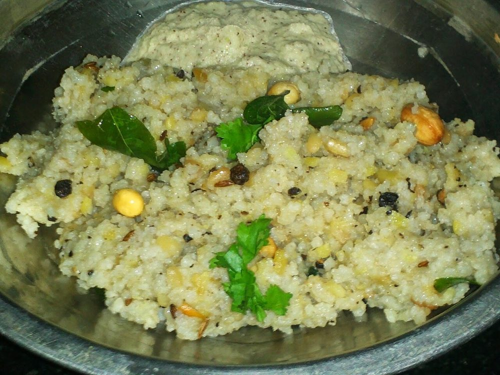

Sindhi Dodo
thick pearl millet flatbread studded with onion and green chilli, eaten with ghee

Contains: milk
Checked against the ingredient list for ten allergens: milk, egg, fish, crustaceans, tree nuts, peanuts, sesame, mustard, soy and gluten. Brands vary, so read the label on anything new to you.
Ingredients
Quantities for 4.
- 2 cups Bajra Flourbuy it fresh. Bajra flour goes rancid within weeks
- 1 medium, very finely chopped Onion
- 2, finely chopped Green Chilli
- 1/4 cup, finely chopped Coriander Leaves
- 1 tsp, crushed between the palms Ajwain
- 4 tbsp, for smearing and cooking Ghee
- 1 tsp Salt
- about 1 cup, warm Water
Cookware
stovetop, tawa
Before you start
- Use warm water, not cold. Bajra has no gluten to hold it together and warm water helps the starch bind the dough.
- Chop the onion very fine. Coarse pieces tear the dodo apart the moment you try to pat it out.
- Rest the dough 10 minutes before shaping so the flour hydrates fully and the dough stops crumbling.
- Keep a bowl of water beside the tawa for wetting your palms while patting.
Method
- Mix the bajra flour, onion, green chilli, coriander leaves, ajwain and salt in a wide bowl.
- Add the warm water a little at a time, working with your knuckles, until you have a firm dough that just holds together when squeezed.Bajra dough never becomes smooth and elastic like wheat. Stop when it holds a ball without cracking apart.
- Cover and rest the dough 10 minutes.
- Divide into 6 balls. Wet your palms and pat one ball out on a sheet of plastic or a damp cloth into a disc about 12cm across and 6mm thick.Pat, do not roll. A rolling pin cracks bajra dough at the edges; wet fingertips seal any cracks as they form.
- Heat the tawa over medium heat until a drop of water skitters across it.
- Lift the disc on your palm and lay it flat on the tawa. Cook 2 minutes until the underside sets and dulls in colour.
- Flip and cook 2 minutes more, then press the edges down with a folded cloth so the whole surface contacts the pan.Pressing the edges is what makes a dodo puff slightly and cook through the thick middle.
- Flip once more and cook 1 minute until brown spots appear and the bread feels firm rather than doughy at the centre.
- Smear generously with ghee and repeat with the remaining dough.
- Serve hot with curd, garlic chutney or leftover sai bhaji.
Storage
Best eaten straight off the tawa. They keep 1 day wrapped in a cloth and are traditionally reheated on the tawa, never in a microwave, which turns them leathery.
Nutrition Good estimate
Low protein: 7 g a serving, 8% of the calories
| Per serving105 g | Per 100 g | |
|---|---|---|
| Calories | 355 kcal | 338 kcal |
| Protein | 6.9 g | 7 g |
| Carbohydrate | 48.3 g | 46 g |
| of which sugars | 2.3 g | 2 g |
| Fibre | 3.1 g | 3 g |
| Fat | 15.4 g | 15 g |
| of which saturated | 8.3 g | 8 g |
| of which unsaturated | 6.3 g | 6 g |
Worked out from the listed quantities; most of the ingredient list could be weighed. Some ingredients have no exact match in the nutrient database and use the nearest equivalent: bajra flour. Estimated from raw ingredients using USDA FoodData Central. Cooking changes are not modelled, and added salt is excluded, so sodium is not given.
Written and checked against sources, not cooked in a test kitchen. Times, yields, allergens and nutrition are worked out rather than measured, so use your own judgement on doneness and on storing. More in About.